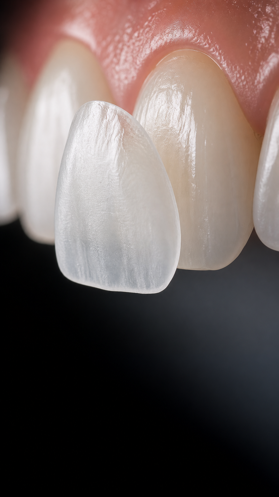
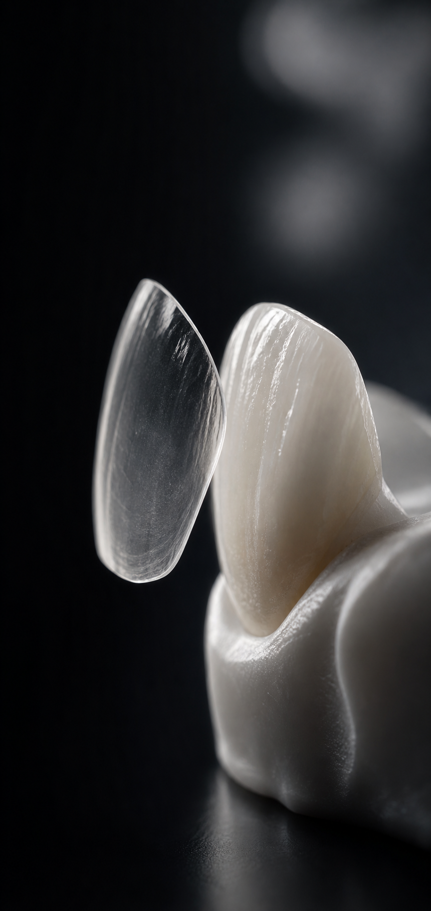
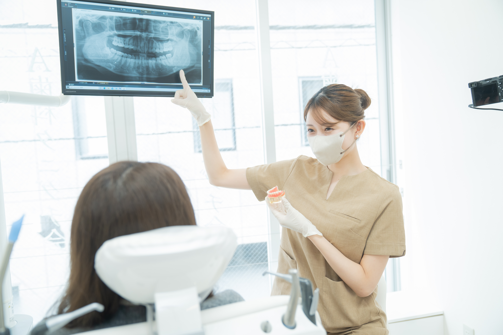

LAMINATE VENEER
削りすぎないラミネートベニア無料相談
薄いセラミックで、
前歯を上品に
整える。
色、形、すき間、スマイルライン。自然な透明感を大切にしながら、あなたに合う口元のデザインを無料相談で一緒に確認します。
- 0円無料相談
- 最短2回通院目安
- 東銀座1分完全予約制
ABOUT
削りすぎない設計
大きく削る前に、まずは微調整で整う可能性を見ます。
ラミネートベニアを自然に見せるための、必要最小限の設計。
前歯の形や色を整える治療では、ただ白くするだけでなく、厚み、透明感、歯ぐきとのライン、唇との見え方まで確認することが大切です。
東京銀座NOVA矯正歯科では、削る量を抑えることを前提に、現在の歯の状態と理想の仕上がりを照らし合わせながら治療方針をご提案します。

MICRO ADJUSTMENT
ミクロ単位の形態修正
「本当に削ってるの？」と思うほどの変化を目指します。実際の症例写真が用意でき次第、この枠に差し替えます。
PROOF
確認ポイント
削りすぎない設計を支える2つの基準として、処置負担と仮歯の必要性を確認します。
痛みや処置負担を抑えられるか
調整量や歯の状態を診査し、麻酔の要否や治療時の負担を事前に確認します。状態によって必要な処置は異なります。
仮歯が必要な設計か
大きく削る治療と異なり、仮歯を必要としない計画が可能かどうかを見極めます。仕上がりと歯の保護を両立させます。
ULTRA THIN
薄さと透明感
極薄のセラミックが、自然なフィット感につながります。

Thin ceramic design
0.08mm
薄さの目安。実際の適応や設計は、歯の状態とご希望を確認して判断します。
NATURAL FINISH
自然な仕上がり
近くで見ても、白さだけが浮かない質感を目指します。
口元の印象は、歯の白さだけで決まりません。光の反射、歯の丸み、唇とのバランスまで見ながら、顔立ちになじむ自然な美しさを目指します。
MATERIAL / CRAFT
素材と質感設計
単調な白さではなく、透明感と質感まで設計します。
素材・技工説明の差し替え枠。
参照LPでは、ブロック削り出しと手作業で積層する技工の違いを説明していました。このデモでは、NOVAで正式に訴求する素材名や技工内容が決まり次第、ここに反映できる構造にしています。
- 色味の単調さを避ける
- 光の透け感を自然に見せる
- 顔全体の印象に合わせて設計する
COMPARISON
白さの質感比較
同じ「白い歯」でも、質感で印象は変わります。
TREATMENT POLICY
治療方針
「削らない」だけを目的にせず、仕上がりとのバランスを見ます。
歯を守ることは大切です。一方で、まったく調整せずに貼るだけでは、厚みが出たり、歯が前に出て見えたり、のっぺりした印象になる場合があります。
だからこそ、NOVAでは「削るか、削らないか」だけで判断せず、どの仕上がりを目指すか、どこまで調整が必要かを無料相談で一緒に確認します。
DESIGN CHECK
デザイン確認
歯の形を自然に見せるため、細かなバランスを確認します。

口元だけでなく、表情全体で見ます。
歯の長さ、角の丸み、横幅、スマイルライン、歯ぐきの見え方を確認し、自然に見えるバランスを探ります。
仕上がりイメージは言葉だけでは伝わりにくいため、症例写真やデザイン確認を使いながらすり合わせます。
PROCEDURE
治療の流れ

診査、カウンセリング、デザイン確認、装着まで、治療の流れを見える化します。正式な症例写真や工程カットが揃い次第、ここも差し替え可能です。
RE-TREATMENT
ベニアの再相談
過去のベニアに違和感がある方も相談できます。
厚み・色味・形の違和感を、もう一度整えるために。
既存のベニアを外せるか、歯に負担をかけずに再設計できるかを診査します。
再治療の可否は、歯の状態や過去の治療内容によって異なります。無料相談で診査のうえ、可能な選択肢をご案内します。
RECOMMENDED
おすすめの方
ただ白くするのではなく、前歯の見え方を細かく整えたい方に向いています。
矯正後に色や形まで整えたい
歯並びの次に、前歯の細かな印象まで整えたい方へ。
すき間や小さい歯が気になる
すきっ歯、矮小歯、左右差などを自然にカバーしたい方へ。
短期間で印象を変えたい
仕事やイベント前に、口元の清潔感を高めたい方へ。
ホワイトニング以上の質感が欲しい
色だけでなく、形や透明感も含めてデザインしたい方へ。
SCHEDULE
通院目安
理想の口元を、最短2回の通院目安で。
MINIMUM
2
VISITS
期間や回数は症例により変動します。
CASE STUDY
症例紹介
この方のケース概要
- 前歯の色味を改善
- すき間を自然にカバー
- 明るく上品な口元へ
- 治療内容
- 前歯の色味改善、すき間のカバー、口元の印象改善
- リスク
- 破折、脱離、色味や形の感じ方の個人差などが起こる場合があります。
- 注記
- 掲載症例は一例です。治療結果には個人差があります。
FEATURE
選ばれる理由
相談前から治療後まで、自然な仕上がりを支える体制があります。
Feature 01
無料相談で不安を整理
治療前に、希望、期間、費用感、削る量への不安を丁寧に確認します。
薄さとフィット感を重視
厚ぼったく見えないよう、歯の状態に合わせた自然な設計を目指します。
Feature 03
顔全体でデザイン確認
歯だけでなく、笑った時の表情や口元全体のバランスを見ます。
 Feature 04
Feature 04
医師が治療方針を説明
メリットだけでなく、適応やリスクも含めて納得できるよう説明します。
FREE COUNSELING
無料カウンセリング
「前歯の形が気になる」「すき間を自然に整えたい」「白さだけでなく透明感にこだわりたい」。そんな方に向けて、現在の歯の状態とご希望を確認し、治療の選択肢をご説明します。
DOCTOR
ドクター紹介
院長
神田 純也
見た目の美しさだけでなく、噛み合わせや将来の歯の健康まで考えた治療計画を大切にしています。まずは無料相談で、理想の口元と不安な点をお聞かせください。
CLINIC
東京銀座NOVA矯正歯科
- 住所
- 〒104-0061
東京都中央区銀座5丁目14-17 USBビル2F - アクセス
- 東銀座駅から徒歩1分 / 銀座駅から徒歩5分
- 診療時間
- 火曜から日曜 10:00-14:00 / 15:00-19:00
- 休診日
- 月曜
- 予約
- 完全予約制 / 電話・WEB・LINE
MAP
Google Map embed area
本番化時に地図を差し込み